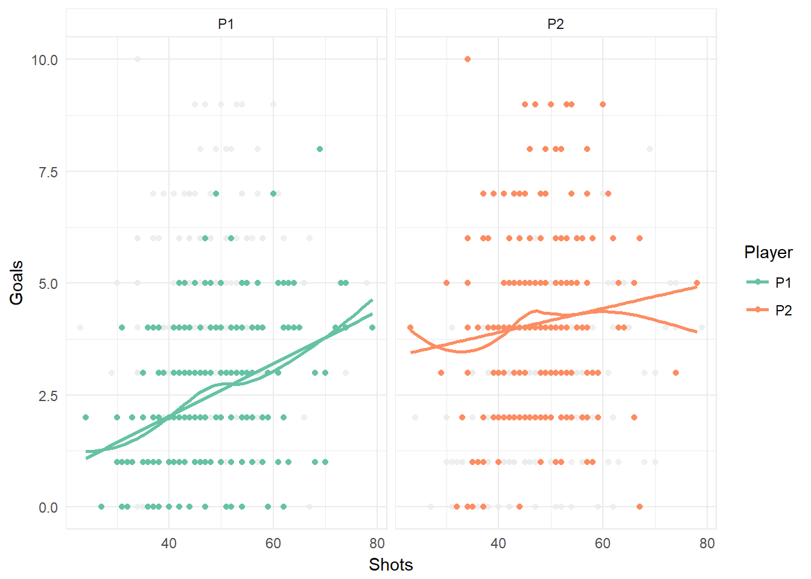

STAT 541 Final Project Report
Scott Graham
December 06, 2017
\[ \newcommand{\Prob}{\operatorname{P}} \newcommand{\E}{\operatorname{E}} \newcommand{\Var}{\operatorname{Var}} \newcommand{\Cov}{\operatorname{Cov}} \newcommand{\se}{\operatorname{se}} \newcommand{\re}{\operatorname{re}} \newcommand{\ybar}{{\overline{Y}}} \newcommand{\phat}{{\hat{p}}} \newcommand{\that}{{\hat{T}}} \newcommand{\med}{{\tilde{Y}}} \]
Introduction
Data
This data set contains the results of 217 games played in the video games NHL 12, 13, and 17, played between 2 friends, Tim and Randy (P1 and P2 respectively)1. They compiled a incredibly detailed gamelog for each game played, with well over 50 variables recorded, and period by period breakdowns. For those not familiar, the NHL series of video games is developed by EA Sports, and serves as the most readily available means of simulating real NHL.2 While obviously not perfect, it serves as a decent proxy for predicting the results of hockey games in general, as many of the same principles apply.
Since the outcome of a game is determined by the end score, any variables referencing the goals scored have been removed, as they serve little to know interest in the prediction of games. However there is one exception, and that is who scored the first goal of the game, which in itself seemed to be an interesting possible predictor. Instead more periphery statistics will be looked at, such as hits, shots, face off percentage, breakaways, penalties, and other such things. As well, a 1 game lagged result term has been included, to see if any autocorrelation exists within the results, and if it plays a significant role in the prediction process.
Analysis
In this report, a Binomial and Log Linear LASSO model will be used in the variable selection and coefficient estimation process, in addition to the usual step wise methods. As previously mentioned, the autocorrelation of the results will also be examined to see if such an effect exists. Finally a variety of visual tools will be used in the exploratory analysis portion of the paper, in an effort to understand the relationships within the data.
For the LASSO model, the package glmnet is used, to perform an elastic-net version of the LASSO model3. All the data cleaning is done with the usage of a variety of packages from the “tidyverse”. This includes the packages dplyr, tidyr, magrittr, and tibble.4 As well, the flatr package is used to transform contingency tables into “tidy” data frames, where each variable has its own column for each observation. flatr was created by myself in an effort to simplify some of the cleaning done for this course. Finally ggplot2 is used as the primary visualization method, due to its flexibility in creating visualizations, and overall better appearance than base graphics.
Research Question
What periphery (non-goal related) statistics can be used to predict the outcome of a hockey game?
Exploratory Analysis
Correlation Matrix
One of the primary issues with any regression model is collinearity among the predictors. To analyse this, a correlation matrix has been generated, presented as the corresponding visualization. Any of the variables that are of numeric type are evaluated.
hockey_data %>%
select_if(.predicate = is.numeric) %>%
select(
-c(
Game
,Version
,`P2 - P1 Goals`
)
,-ends_with("Differential")
) %>%
cor() %>%
as.data.frame() %>%
rownames_to_column() %>%
as.tibble() %>%
gather(
key = Column
,value = Correlation
,-rowname
) %>%
rename(Row = rowname) %>%
ggplot(
aes(
x = Column
,y = Row
,fill = Correlation
)
) +
geom_raster() +
scale_fill_distiller(
type = "div"
,palette = "RdBu"
,limits = c(-1, 1)
) +
theme(
axis.text.x = element_text(angle = 90, hjust = 1)
,axis.title.x = element_blank()
,axis.title.y = element_blank()
)
There appears to be be fairly small correlation among the different variables, with a few exceptions. Time of Attack (ToA) and Shots appear to have a somewhat significant correlation, which is expected, as the more time spent in the attacking zone, the more shots are generated. Hits and face offs appear to be correlated, which is interesting, as I can’t see a reason why this would occur.
Distribution of Goals
The underlying distribution of goals may also be of interest. I expect a right-skewed distribution, as most games typically have 3.2972 goals for each player. As well, the domain of the distribution is \([0, \infty)\), as negative goals can’t be awarded. The distribution of their difference is looked at as well, which should be bimodal, as no ties exist in the data set or in the modern NHL.
hockey_data %>%
select(
P1
,P2
,`P2 - P1 Goals`
) %>%
gather(
key = "Variable"
,value = "Goals"
) %>%
mutate(
Variable =
factor(
x = Variable
,levels = c("P1", "P2", "P2 - P1 Goals")
)
) %>%
ggplot(
aes(
x = Goals
,colour = Variable
)
) +
geom_density() +
facet_wrap(
facet = ~ Variable
,ncol = 1
) +
scale_colour_brewer(
type = "qual"
,name = "Variable"
,palette = "Set2"
)
P2’s distribution matches what was expected, as well as the difference. P1’s on the other hand appears to be more symmetric than expected, possibly due to a decreased likelihood of him running up the score.
Another factor to explore is if the version of the game changes the distribution. Besides updating player rosters, various game play changes are made, which may effect each player differently.
hockey_data %>%
select(
P1
,P2
,`P2 - P1 Goals`
,Version
) %>%
gather(
key = "Variable"
,value = "Goals"
,-Version
) %>%
mutate(
Variable =
factor(
x = Variable
,levels = c("P1", "P2", "P2 - P1 Goals")
)
) %>%
ggplot(
aes(
x = Goals
,colour = Variable
)
) +
geom_density() +
facet_grid(facet = Version ~ Variable) +
scale_colour_brewer(
type = "qual"
,name = "Variable"
,palette = "Set2"
)
It appears version does not play a significant role in determining the distribution of goals. This can be seen by reading the chart from top to bottom, and not seeing significant changes in the shape of the kernel density estimators.
Goals vs. Shots
“You miss 100% of the shots you don’t take.” - Wayne Gretzky
An important relationship in hockey is that of Goals and Shots. Reasonably assumed, the more shots you take, the more goals you score. The question is though, does this relationship differ for each player?
hockey_data_GvS <-
hockey_data %>%
select(
Game
,`P1 Goals` = P1
,`P2 Goals` = P2
,`P1 Shots`
,`P2 Shots`
) %>%
gather(
key = Variable
,value = Value
,-Game
) %>%
mutate(
Player =
if_else(
grepl(pattern = "P1 *", x = .$Variable), "P1", "P2"
)
,Statistic =
if_else(
grepl(pattern = "* Goals", x = .$Variable), "Goals", "Shots"
)
) %>%
select(-Variable) %>%
spread(
key = Statistic
,value = Value
) %>%
mutate(Player = as.factor(Player))
hockey_data_GvS %>%
ggplot(
aes(
x = Shots
,y = Goals
,colour = Player
)
) +
geom_point(
data =
hockey_data_GvS %>%
select(-Player)
,colour="grey92"
,alpha = 0.75
) +
geom_point() +
geom_smooth(
method = "loess"
,se = FALSE
) +
geom_smooth(
method = "lm"
,se = FALSE
) +
facet_grid(facet = ~ Player) +
scale_colour_brewer(
type = "qual"
,name = "Player"
,palette = "Set2"
)
As one can see, clearly P2 scores more goals on average (4.106 vs. 2.4885). However the slopes of the two lines appear to differ, with P1’s being higher than P2’s. This leads to two possible conclusions:
- P1 should shoot the puck more often, as his expected goals will rise at a faster rate than P2’s
- P2 shouldn’t worry as much about getting lots of shots, but primarily focus on getting high danger chances (chances close to the net)
Autocorrelation
Autocorrelation measures the correlation between \(\left(X_{t-k}, X_{t}\right), t=k, k+1\dots,n\). It is primarily used in timeseries analysis to measure the tendency for a time series to be mean reverting (negative autocorrelation) or a tendency to go on long runs in one direct or the other (positive autocorrelation). This is primarily used in the analysis of stock returns, but can be applied to any time series.
What we wish to measure is if P1 wins the last game, is he more or less likely to win the following game? This can be accomplished both graphically, and through the use of a Durbin-Watson test5. More specifically, the Durbin-Watson statistic tests: \[ H_{0}: \text{Autocorrelation} = 0 \] \[ H_{1}: \text{Autocorrelation} \neq 0 \]
hockey_data_acf <-
hockey_data %>%
mutate(P1_Win_Bool = if_else(`P1 Win` == "Yes", 1, 0)) %>%
select(P1_Win_Bool) %>%
acf(plot = FALSE)
hockey_data_acf##
## Autocorrelations of series '.', by lag
##
## 0 1 2 3 4 5 6 7 8 9
## 1.000 0.101 0.126 -0.004 -0.057 0.019 -0.047 0.105 -0.070 -0.034
## 10 11 12 13 14 15 16 17 18 19
## -0.157 0.033 -0.065 -0.015 -0.119 -0.044 -0.013 -0.086 -0.036 -0.057
## 20 21 22 23
## 0.050 -0.105 0.079 -0.050data.frame(Lag = hockey_data_acf$lag, Autocorrelation = hockey_data_acf$acf) %>%
ggplot(
aes(
x = Lag
,y = Autocorrelation
)
) +
geom_hline(
aes(
yintercept = 0
)
,linetype = "dotted"
) +
geom_segment(
aes(
xend = Lag
,yend = 0
)
) +
geom_smooth(
linetype = 0
,method = "lm"
,formula = y ~ 1
)
As one can see, the autocorrelation for \(k=1\) is not larger than the 95% confidence interval, as shown by the grey band. Since we are interested in the case for \(k=1\), we can confirm this by modeling: \[ \operatorname{Logit}\left( \text{P1 Wins} \right) = \alpha + \beta_{1}\text{Previous Game's Result} \]
and looking at the Wald Statistic, and the Durbin-Watson Statistic from the lmtest package, using the function dwtest.
hockey_acf_logit <-
hockey_data %>%
glm(
formula = `P1 Win` ~ `P1 Previous Game`
,family = binomial
,data = .
)
summary(hockey_acf_logit)##
## Call:
## glm(formula = `P1 Win` ~ `P1 Previous Game`, family = binomial,
## data = .)
##
## Deviance Residuals:
## Min 1Q Median 3Q Max
## -0.8677 -0.6905 -0.6905 -0.6905 1.7610
##
## Coefficients:
## Estimate Std. Error z value Pr(>|z|)
## (Intercept) -1.3122 0.1904 -6.891 5.55e-12 ***
## `P1 Previous Game`Yes 0.5294 0.3568 1.484 0.138
## ---
## Signif. codes: 0 '***' 0.001 '**' 0.01 '*' 0.05 '.' 0.1 ' ' 1
##
## (Dispersion parameter for binomial family taken to be 1)
##
## Null deviance: 236.11 on 215 degrees of freedom
## Residual deviance: 233.98 on 214 degrees of freedom
## (1 observation deleted due to missingness)
## AIC: 237.98
##
## Number of Fisher Scoring iterations: 4lmtest::dwtest(hockey_acf_logit, alternative = "two.sided")##
## Durbin-Watson test
##
## data: hockey_acf_logit
## DW = 2.024, p-value = 0.8647
## alternative hypothesis: true autocorrelation is not 0The Wald Statistic allows us to reject the null hypothesis that the previous games result has an effect on the game at hand, and the Durbin-Watson Statistics also confirms this result, both based on the sample.
Modeling
Contingency Table Model
Contingency Table
A very simplistic model is considered as a starting point for the modeling process, as well as a means of showing of the 3 main functions of the flatr package. The contingency table has 3 dimensions; Winner, Home Team, and who scored 1st.
hockey_ct_summary <-
hockey_data %>%
select(
`P1 Win`
,`P1 Home`
,`Scored 1st`
) %>%
group_by_all() %>%
count() %>%
ungroup()
hockey_ct <-
array(
data =
c(
hockey_ct_summary %>%
filter(
`P1 Win` == "Yes"
,`P1 Home` == "H"
,`Scored 1st` == "P1"
) %>%
select(n) %>%
as.numeric()
,hockey_ct_summary %>%
filter(
`P1 Win` == "Yes"
,`P1 Home` == "H"
,`Scored 1st` == "P2"
) %>%
select(n) %>%
as.numeric()
,hockey_ct_summary %>%
filter(
`P1 Win` == "No"
,`P1 Home` == "H"
,`Scored 1st` == "P1"
) %>%
select(n) %>%
as.numeric()
,hockey_ct_summary %>%
filter(
`P1 Win` == "No"
,`P1 Home` == "H"
,`Scored 1st` == "P2"
) %>%
select(n) %>%
as.numeric()
,hockey_ct_summary %>%
filter(
`P1 Win` == "Yes"
,`P1 Home` == "A"
,`Scored 1st` == "P1"
) %>%
select(n) %>%
as.numeric()
,hockey_ct_summary %>%
filter(
`P1 Win` == "Yes"
,`P1 Home` == "A"
,`Scored 1st` == "P2"
) %>%
select(n) %>%
as.numeric()
,hockey_ct_summary %>%
filter(
`P1 Win` == "No"
,`P1 Home` == "A"
,`Scored 1st` == "P1"
) %>%
select(n) %>%
as.numeric()
,hockey_ct_summary %>%
filter(
`P1 Win` == "No"
,`P1 Home` == "A"
,`Scored 1st` == "P2"
) %>%
select(n) %>%
as.numeric()
)
,dim = c(2, 2, 2)
,dimnames =
list(
Scored_1st = c("P1", "P2")
,Winner = c("P1", "P2")
,Home = c("P1", "P2")
)
)
hockey_ct## , , Home = P1
##
## Winner
## Scored_1st P1 P2
## P1 12 12
## P2 4 23
##
## , , Home = P2
##
## Winner
## Scored_1st P1 P2
## P1 25 35
## P2 10 96flatten_ct
flatten_ct takes a \(i \times j \times k\) contingency table, and turns it into a data frame. The 3 columns of the data frame are populated by the names of the levels of the table, and are repeated the appropriate number of times. It also plays well with magrittr’s %>%, or pipe. It is equivalent to writing nested functions. For example 10 %>% rnorm() %>% mean() is equivalent to mean(rnorm(10)).
Below is a sample of what the output of the function, and proof it matches the contingency table when summarized.
hockey_ct %>%
flatten_ct() %>%
head() %>%
kable(digits = 4, format = "latex", booktabs = T) %>%
kable_styling()hockey_ct %>%
flatten_ct() %>%
group_by_all() %>%
count() %>%
kable(digits = 4, format = "latex", booktabs = T) %>%
kable_styling()Regression Models and Goodness of Fit Tests
A Logistic regression model has been fitted, where: \[ \operatorname{Logit}\left( \text{P1 Wins} \right) = \alpha + \beta_{1}\text{Scored First} + \beta_{2}\text{Home Team} \]
As well a log linear function is fitted, where: \[ \ln(\mu) = \alpha + \beta_{1}\text{Scored First} + \beta_{2}\text{P1 Wins} + \beta_{3}\text{Home Team} \]
hockey_ct_logit <-
hockey_ct %>%
flatten_ct() %>%
glm(
Winner ~ Scored_1st + Home
,family = binomial
,data = .
)
summary(hockey_ct_logit)##
## Call:
## glm(formula = Winner ~ Scored_1st + Home, family = binomial,
## data = .)
##
## Deviance Residuals:
## Min 1Q Median 3Q Max
## -2.1606 0.4515 0.4515 0.5451 1.1967
##
## Coefficients:
## Estimate Std. Error z value Pr(>|z|)
## (Intercept) -0.0454 0.3525 -0.129 0.898
## Scored_1stP2 1.8769 0.3591 5.227 1.72e-07 ***
## HomeP2 0.4006 0.3883 1.032 0.302
## ---
## Signif. codes: 0 '***' 0.001 '**' 0.01 '*' 0.05 '.' 0.1 ' ' 1
##
## (Dispersion parameter for binomial family taken to be 1)
##
## Null deviance: 236.65 on 216 degrees of freedom
## Residual deviance: 203.72 on 214 degrees of freedom
## AIC: 209.72
##
## Number of Fisher Scoring iterations: 4goodness_of_fit(model = hockey_ct_logit, type = "Chisq")##
## Chi-squared Goodness of Fit Test
##
## model: hockey_ct_logit
## Chi-squared = 0.04855, df = 1, p-value = 0.82561goodness_of_fit(model = hockey_ct_logit, type = "Gsq")##
## G-squared Goodness of Fit Test
##
## model: hockey_ct_logit
## G-squared = 0.04815, df = 1, p-value = 0.82632hockey_ct_loglin <-
hockey_ct %>%
flatten_ct() %>%
group_by_all() %>%
count() %>%
ungroup() %>%
glm(
n ~ (Scored_1st + Winner + Home)^2
,family = poisson
,data = .
)
summary(hockey_ct_loglin)##
## Call:
## glm(formula = n ~ (Scored_1st + Winner + Home)^2, family = poisson,
## data = .)
##
## Deviance Residuals:
## 1 2 3 4 5 6 7
## -0.07803 0.05466 0.07922 -0.04591 0.13938 -0.08535 -0.05656
## 8
## 0.02782
##
## Coefficients:
## Estimate Std. Error z value Pr(>|z|)
## (Intercept) 2.5074 0.2671 9.387 < 2e-16 ***
## Scored_1stP2 -1.1916 0.4036 -2.953 0.00315 **
## WinnerP2 -0.0454 0.3525 -0.129 0.89754
## HomeP2 0.7006 0.3150 2.224 0.02614 *
## Scored_1stP2:WinnerP2 1.8769 0.3591 5.227 1.73e-07 ***
## Scored_1stP2:HomeP2 0.3131 0.3527 0.888 0.37472
## WinnerP2:HomeP2 0.4006 0.3883 1.032 0.30227
## ---
## Signif. codes: 0 '***' 0.001 '**' 0.01 '*' 0.05 '.' 0.1 ' ' 1
##
## (Dispersion parameter for poisson family taken to be 1)
##
## Null deviance: 174.425496 on 7 degrees of freedom
## Residual deviance: 0.048146 on 1 degrees of freedom
## AIC: 51.99
##
## Number of Fisher Scoring iterations: 3goodness_of_fit_loglin(model = hockey_ct_loglin, type = "Chisq")##
## Chi-squared Goodness of Fit Test
##
## model: hockey_ct_loglin
## Chi-squared = 0.04855, df = 1, p-value = 0.82561goodness_of_fit_loglin(model = hockey_ct_loglin, type = "Gsq")##
## G-squared Goodness of Fit Test
##
## model: hockey_ct_loglin
## G-squared = 0.04815, df = 1, p-value = 0.82632goodness_of_fit and goodness_of_fit_loglin perform the goodness of fit tests for binomial models and log linear models respectively. Eventually I plan on putting them both in the same function call. As well, they have a nice looking printout, detailing the model, test statistic, degrees of freedom and the p-value.
The models themselves aren’t terribly interesting, as there aren’t many statistically significant coefficients. However both of them fail to reject the null hypothesis of the model fits the data in the goodness of fit tests, so at least that’s a start.
Full Model
The full model used is the model that contains the majority of the predictors.
hockey_full_logit_01<-
hockey_data %>%
glm(
formula =
`P1 Win` ~
`P1 Previous Game` + `P1 Home` + `P1 Team` + `Scored 1st` +
`P1 Shots` + `P2 Shots` + `P1 Hits` + `P2 Hits` + `P1 ToA` + `P2 ToA` +
`P1 Passing` + `P2 Passing` + `P1 Faceoffs` + `P2 Faceoffs` +
`P1 Offensive Faceoffs` + `P2 Offensive Faceoffs` + `P1 PM` + `P2 PM` +
`P1 Powerplays` + `P2 Powerplays` + `P1 Penalty Shots` + `P2 Penalty Shots` +
`P1 Breakaways` + `P2 Breakaways`
,family = binomial
,data = .
)
summary(hockey_full_logit_01)##
## Call:
## glm(formula = `P1 Win` ~ `P1 Previous Game` + `P1 Home` + `P1 Team` +
## `Scored 1st` + `P1 Shots` + `P2 Shots` + `P1 Hits` + `P2 Hits` +
## `P1 ToA` + `P2 ToA` + `P1 Passing` + `P2 Passing` + `P1 Faceoffs` +
## `P2 Faceoffs` + `P1 Offensive Faceoffs` + `P2 Offensive Faceoffs` +
## `P1 PM` + `P2 PM` + `P1 Powerplays` + `P2 Powerplays` + `P1 Penalty Shots` +
## `P2 Penalty Shots` + `P1 Breakaways` + `P2 Breakaways`, family = binomial,
## data = .)
##
## Deviance Residuals:
## Min 1Q Median 3Q Max
## -1.9727 -0.6721 -0.3249 -0.0002 2.5448
##
## Coefficients: (1 not defined because of singularities)
## Estimate Std. Error z value Pr(>|z|)
## (Intercept) -1.096e+01 4.927e+00 -2.224 0.0261 *
## `P1 Previous Game`Yes 2.597e-01 4.674e-01 0.556 0.5785
## `P1 Home`H NA NA NA NA
## `P1 Team`Detroit -1.334e+01 1.797e+03 -0.007 0.9941
## `P1 Team`Montreal 6.947e-01 1.221e+00 0.569 0.5694
## `P1 Team`Nashville -1.205e+01 3.956e+03 -0.003 0.9976
## `P1 Team`Philadelphia -1.382e+01 2.687e+03 -0.005 0.9959
## `P1 Team`Philly -6.436e-01 2.187e+00 -0.294 0.7686
## `P1 Team`Pittsburgh -9.713e-01 1.681e+00 -0.578 0.5635
## `P1 Team`San Jose 1.285e+00 1.939e+00 0.663 0.5075
## `P1 Team`Tampa Bay -1.712e+01 3.956e+03 -0.004 0.9965
## `P1 Team`Washington -1.386e+01 3.956e+03 -0.004 0.9972
## `P1 Team`Winnipeg -1.269e+01 3.956e+03 -0.003 0.9974
## `Scored 1st`P2 -1.987e+00 4.679e-01 -4.247 2.17e-05 ***
## `P1 Shots` 6.916e-03 2.556e-02 0.271 0.7868
## `P2 Shots` -1.239e-02 3.154e-02 -0.393 0.6945
## `P1 Hits` 8.494e-03 4.551e-02 0.187 0.8519
## `P2 Hits` 4.119e-02 3.600e-02 1.144 0.2525
## `P1 ToA` -1.230e-01 3.242e-01 -0.379 0.7044
## `P2 ToA` -7.954e-03 3.182e-01 -0.025 0.9801
## `P1 Passing` 9.043e+00 4.600e+00 1.966 0.0493 *
## `P2 Passing` 7.841e+00 4.963e+00 1.580 0.1141
## `P1 Faceoffs` -7.983e-02 5.477e-02 -1.458 0.1449
## `P2 Faceoffs` -5.485e-02 6.520e-02 -0.841 0.4002
## `P1 Offensive Faceoffs` 9.389e-02 1.091e-01 0.860 0.3897
## `P2 Offensive Faceoffs` 4.889e-02 1.055e-01 0.463 0.6432
## `P1 PM` 1.089e-01 1.089e-01 1.000 0.3174
## `P2 PM` -3.442e-02 1.036e-01 -0.332 0.7398
## `P1 Powerplays` 3.582e-01 2.443e-01 1.466 0.1426
## `P2 Powerplays` -2.163e-01 2.670e-01 -0.810 0.4178
## `P1 Penalty Shots` 2.718e-01 4.455e-01 0.610 0.5417
## `P2 Penalty Shots` -1.132e+00 8.147e-01 -1.389 0.1648
## `P1 Breakaways` 2.593e-01 1.378e-01 1.881 0.0600 .
## `P2 Breakaways` -5.875e-02 1.527e-01 -0.385 0.7004
## ---
## Signif. codes: 0 '***' 0.001 '**' 0.01 '*' 0.05 '.' 0.1 ' ' 1
##
## (Dispersion parameter for binomial family taken to be 1)
##
## Null deviance: 236.11 on 215 degrees of freedom
## Residual deviance: 169.41 on 183 degrees of freedom
## (1 observation deleted due to missingness)
## AIC: 235.41
##
## Number of Fisher Scoring iterations: 16First thing to notice is that R doesn’t like the P1 Home variable, and defines it as a singularity, so it should be removed. As well, P1 Team is taken out, as it makes the model much more complicated, while adding no statistically significant benefit. As well, thanks to the analysis on the autocorrelation term, we can remove that as well. A model with interaction terms would be useful to look at, however due to the number of parameter, this is not feasible as \(p>n\).
hockey_full_logit_02<-
glm(
formula =
`P1 Win` ~
`Scored 1st` +
`P1 Shots` + `P2 Shots` +
`P1 Hits` + `P2 Hits` +
`P1 ToA` + `P2 ToA` +
`P1 Passing` + `P2 Passing` +
`P1 Faceoffs` + `P2 Faceoffs` +
`P1 Offensive Faceoffs` + `P2 Offensive Faceoffs` +
`P1 PM` + `P2 PM` +
`P1 Powerplays` + `P2 Powerplays` +
`P1 Penalty Shots` + `P2 Penalty Shots` +
`P1 Breakaways` + `P2 Breakaways`
,family = binomial
,data = hockey_data
)
summary(hockey_full_logit_02)##
## Call:
## glm(formula = `P1 Win` ~ `Scored 1st` + `P1 Shots` + `P2 Shots` +
## `P1 Hits` + `P2 Hits` + `P1 ToA` + `P2 ToA` + `P1 Passing` +
## `P2 Passing` + `P1 Faceoffs` + `P2 Faceoffs` + `P1 Offensive Faceoffs` +
## `P2 Offensive Faceoffs` + `P1 PM` + `P2 PM` + `P1 Powerplays` +
## `P2 Powerplays` + `P1 Penalty Shots` + `P2 Penalty Shots` +
## `P1 Breakaways` + `P2 Breakaways`, family = binomial, data = hockey_data)
##
## Deviance Residuals:
## Min 1Q Median 3Q Max
## -1.9680 -0.6815 -0.3479 -0.1289 2.5973
##
## Coefficients:
## Estimate Std. Error z value Pr(>|z|)
## (Intercept) -9.882440 4.551421 -2.171 0.0299 *
## `Scored 1st`P2 -1.964100 0.445035 -4.413 1.02e-05 ***
## `P1 Shots` 0.013922 0.024908 0.559 0.5762
## `P2 Shots` -0.016038 0.029605 -0.542 0.5880
## `P1 Hits` -0.007772 0.041855 -0.186 0.8527
## `P2 Hits` 0.043846 0.032562 1.347 0.1781
## `P1 ToA` -0.209459 0.313304 -0.669 0.5038
## `P2 ToA` -0.052093 0.306604 -0.170 0.8651
## `P1 Passing` 8.197580 4.273661 1.918 0.0551 .
## `P2 Passing` 9.170535 4.748918 1.931 0.0535 .
## `P1 Faceoffs` -0.061720 0.048063 -1.284 0.1991
## `P2 Faceoffs` -0.066995 0.057201 -1.171 0.2415
## `P1 Offensive Faceoffs` 0.072268 0.100372 0.720 0.4715
## `P2 Offensive Faceoffs` 0.071543 0.101292 0.706 0.4800
## `P1 PM` 0.050668 0.087914 0.576 0.5644
## `P2 PM` 0.005239 0.086114 0.061 0.9515
## `P1 Powerplays` 0.249659 0.211105 1.183 0.2370
## `P2 Powerplays` -0.066562 0.217815 -0.306 0.7599
## `P1 Penalty Shots` 0.226442 0.418251 0.541 0.5882
## `P2 Penalty Shots` -1.324944 0.805789 -1.644 0.1001
## `P1 Breakaways` 0.227003 0.129030 1.759 0.0785 .
## `P2 Breakaways` -0.041275 0.147986 -0.279 0.7803
## ---
## Signif. codes: 0 '***' 0.001 '**' 0.01 '*' 0.05 '.' 0.1 ' ' 1
##
## (Dispersion parameter for binomial family taken to be 1)
##
## Null deviance: 236.65 on 216 degrees of freedom
## Residual deviance: 175.63 on 195 degrees of freedom
## AIC: 219.63
##
## Number of Fisher Scoring iterations: 6goodness_of_fit(hockey_full_logit_02, type = "Chisq")##
## Chi-squared Goodness of Fit Test
##
## model: hockey_full_logit_02
## Chi-squared = 197.2851, df = 195, p-value = 0.44078From this we can see that we have two significant parameters at \(\alpha=0.05\), and a couple that are close. As well, we can examine the model that only consists of the summed version of the predictors:
hockey_full_logit_03<-
glm(
formula =
`P1 Win` ~
Shots + Hits + ToA +
Passing + Faceoffs + `Offensive Faceoffs` +
PM + Powerplays + `Penalty Shots` + Breakaways
,family = binomial
,data = hockey_data
)
summary(hockey_full_logit_03)##
## Call:
## glm(formula = `P1 Win` ~ Shots + Hits + ToA + Passing + Faceoffs +
## `Offensive Faceoffs` + PM + Powerplays + `Penalty Shots` +
## Breakaways, family = binomial, data = hockey_data)
##
## Deviance Residuals:
## Min 1Q Median 3Q Max
## -1.2274 -0.7810 -0.6014 -0.3266 2.0747
##
## Coefficients:
## Estimate Std. Error z value Pr(>|z|)
## (Intercept) -7.987e+00 3.537e+00 -2.258 0.0239 *
## Shots 5.606e-05 1.720e-02 0.003 0.9974
## Hits 3.196e-02 2.088e-02 1.531 0.1259
## ToA -1.102e-01 2.074e-01 -0.532 0.5950
## Passing 6.133e+00 2.515e+00 2.439 0.0147 *
## Faceoffs -5.143e-02 2.142e-02 -2.401 0.0163 *
## `Offensive Faceoffs` 7.981e-02 6.330e-02 1.261 0.2074
## PM -1.882e-03 1.705e-02 -0.110 0.9121
## Powerplays 8.546e-02 7.343e-02 1.164 0.2445
## `Penalty Shots` -3.159e-01 2.807e-01 -1.125 0.2605
## Breakaways 6.545e-02 7.864e-02 0.832 0.4052
## ---
## Signif. codes: 0 '***' 0.001 '**' 0.01 '*' 0.05 '.' 0.1 ' ' 1
##
## (Dispersion parameter for binomial family taken to be 1)
##
## Null deviance: 236.65 on 216 degrees of freedom
## Residual deviance: 221.64 on 206 degrees of freedom
## AIC: 243.64
##
## Number of Fisher Scoring iterations: 4goodness_of_fit(hockey_full_logit_03, type = "Chisq")##
## Chi-squared Goodness of Fit Test
##
## model: hockey_full_logit_03
## Chi-squared = 209.3532, df = 206, p-value = 0.42187We still only have 3 statistically significant parameters, so our model still could use some improvements. What this means we need to do some variable selection. Two methods will be looked at; Stepwise Selection, and LASSO.
Stepwise Selection
For both directions of the stepwise selection process, BIC with \(k=\ln(217)\) is used.
Backward BIC
hockey_full_logit_02 %>%
step(
direction = "backward"
,k =
hockey_data %>%
count() %>%
as.numeric() %>%
log()
,trace = 0
) %>%
summary()##
## Call:
## glm(formula = `P1 Win` ~ `Scored 1st` + `P1 Powerplays` + `P2 Penalty Shots`,
## family = binomial, data = hockey_data)
##
## Deviance Residuals:
## Min 1Q Median 3Q Max
## -1.3816 -0.6402 -0.4301 -0.2053 2.7064
##
## Coefficients:
## Estimate Std. Error z value Pr(>|z|)
## (Intercept) -0.8114 0.3667 -2.213 0.0269 *
## `Scored 1st`P2 -1.7359 0.3675 -4.723 2.32e-06 ***
## `P1 Powerplays` 0.2133 0.0900 2.370 0.0178 *
## `P2 Penalty Shots` -1.5155 0.7730 -1.961 0.0499 *
## ---
## Signif. codes: 0 '***' 0.001 '**' 0.01 '*' 0.05 '.' 0.1 ' ' 1
##
## (Dispersion parameter for binomial family taken to be 1)
##
## Null deviance: 236.65 on 216 degrees of freedom
## Residual deviance: 193.78 on 213 degrees of freedom
## AIC: 201.78
##
## Number of Fisher Scoring iterations: 5hockey_step_logit_01 <-
hockey_data %>%
glm(
`P1 Win` ~ `Scored 1st` + `P1 Powerplays` + `P2 Penalty Shots`
,family = binomial
,data = .
)
goodness_of_fit(hockey_step_logit_01, type = "Chisq")##
## Chi-squared Goodness of Fit Test
##
## model: hockey_step_logit_01
## Chi-squared = 29.64574, df = 213, p-value = 1goodness_of_fit(hockey_step_logit_01, type = "Gsq")##
## G-squared Goodness of Fit Test
##
## model: hockey_step_logit_01
## G-squared = NA, df = 213, p-value = NAThis drastically reduces the number of parameters to 4, giving: \[ \operatorname{Logit}\left( \text{P1 Wins} \right) = \alpha + \beta_{1}\text{Scored 1st} + \beta_{2}\text{P1 Powerplays} + \beta_{3}\text{P2 Penalty Shots} \] \[ = -0.8114 - 1.7359\text{Scored 1st} + 0.2133\text{P1 Powerplays} - 1.5155\text{P2 Penalty Shots} \] Where: \[ \text{Scored 1st} = \begin{cases} 0,\text{ if P1} \\ 1,\text{ if P2} \end{cases} \]
And the 95% Confidence intervals for \(e^{\beta_{i}}\) are:
hockey_step_logit_01 %>%
confint() %>%
exp()## Waiting for profiling to be done...## 2.5 % 97.5 %
## (Intercept) 0.21242841 0.9011030
## `Scored 1st`P2 0.08355758 0.3556937
## `P1 Powerplays` 1.04004592 1.4827889
## `P2 Penalty Shots` 0.03360702 0.8073160Forward BIC
hockey_full_logit_02 %>%
step(
direction = "forward"
,k =
hockey_data %>%
count() %>%
as.numeric() %>%
log()
,trace = 0
) %>%
summary()##
## Call:
## glm(formula = `P1 Win` ~ `Scored 1st` + `P1 Shots` + `P2 Shots` +
## `P1 Hits` + `P2 Hits` + `P1 ToA` + `P2 ToA` + `P1 Passing` +
## `P2 Passing` + `P1 Faceoffs` + `P2 Faceoffs` + `P1 Offensive Faceoffs` +
## `P2 Offensive Faceoffs` + `P1 PM` + `P2 PM` + `P1 Powerplays` +
## `P2 Powerplays` + `P1 Penalty Shots` + `P2 Penalty Shots` +
## `P1 Breakaways` + `P2 Breakaways`, family = binomial, data = hockey_data)
##
## Deviance Residuals:
## Min 1Q Median 3Q Max
## -1.9680 -0.6815 -0.3479 -0.1289 2.5973
##
## Coefficients:
## Estimate Std. Error z value Pr(>|z|)
## (Intercept) -9.882440 4.551421 -2.171 0.0299 *
## `Scored 1st`P2 -1.964100 0.445035 -4.413 1.02e-05 ***
## `P1 Shots` 0.013922 0.024908 0.559 0.5762
## `P2 Shots` -0.016038 0.029605 -0.542 0.5880
## `P1 Hits` -0.007772 0.041855 -0.186 0.8527
## `P2 Hits` 0.043846 0.032562 1.347 0.1781
## `P1 ToA` -0.209459 0.313304 -0.669 0.5038
## `P2 ToA` -0.052093 0.306604 -0.170 0.8651
## `P1 Passing` 8.197580 4.273661 1.918 0.0551 .
## `P2 Passing` 9.170535 4.748918 1.931 0.0535 .
## `P1 Faceoffs` -0.061720 0.048063 -1.284 0.1991
## `P2 Faceoffs` -0.066995 0.057201 -1.171 0.2415
## `P1 Offensive Faceoffs` 0.072268 0.100372 0.720 0.4715
## `P2 Offensive Faceoffs` 0.071543 0.101292 0.706 0.4800
## `P1 PM` 0.050668 0.087914 0.576 0.5644
## `P2 PM` 0.005239 0.086114 0.061 0.9515
## `P1 Powerplays` 0.249659 0.211105 1.183 0.2370
## `P2 Powerplays` -0.066562 0.217815 -0.306 0.7599
## `P1 Penalty Shots` 0.226442 0.418251 0.541 0.5882
## `P2 Penalty Shots` -1.324944 0.805789 -1.644 0.1001
## `P1 Breakaways` 0.227003 0.129030 1.759 0.0785 .
## `P2 Breakaways` -0.041275 0.147986 -0.279 0.7803
## ---
## Signif. codes: 0 '***' 0.001 '**' 0.01 '*' 0.05 '.' 0.1 ' ' 1
##
## (Dispersion parameter for binomial family taken to be 1)
##
## Null deviance: 236.65 on 216 degrees of freedom
## Residual deviance: 175.63 on 195 degrees of freedom
## AIC: 219.63
##
## Number of Fisher Scoring iterations: 6Note this is the second full model discussed earlier. Since stepwise selection is almost never used in favor of other methods, and the fact that it gave us some not so useful results, LASSO will be looked at as well in hopes of a better model6.
LASSO
How LASSO regression works is it estimates the value of all the parameters, and starts shrinking them to 0. In this way, LASSO has the advantage of stepwise regression in that it performs both variable selection and coefficient estimation. This is done by manipulating the bias variance trade off. By introducing a bit of bias into the coefficients, the variance of the coefficients can be reduced.
In LASSO regression instead of minimizing \(\left(y_{i} - \hat{y}_{i}\right)^{2}\), you minimize \(\left|y_{i} - \hat{y}_{i}\right|\). Doing so allows for coefficients to be set to 0, instead of merely near it. The question then becomes, how many coefficients are set to 0? This is accomplished through the use of a tuning parameter \(\lambda\), which is in turn determined via the usage of cross-validation. The general rule of thumb for \(\lambda\) is to choose it such that the resulting model has 1 standard error than the minimum mean squared error model, in an effort to prevent overfitting.
To do so, the package glment is used, specifically the function cv.glmnet. Unlike base R, glmnet only takes matrices as inputs, so all data frames must be converted to matrices to be used with the model; \(\vec{X}\) and \(\vec{Y}\).7
ind_var_01 <-
c(
"Scored 1st Boolean (P2)"
,"P1 Shots"
,"P2 Shots"
,"P1 Hits"
,"P2 Hits"
,"P1 ToA"
,"P2 ToA"
,"P1 Passing"
,"P2 Passing"
,"P1 PM"
,"P2 PM"
,"P1 Powerplays"
,"P2 Powerplays"
,"P1 Faceoffs"
,"P2 Faceoffs"
,"P1 Breakaways"
,"P2 Breakaways"
,"P1 Penalty Shots"
,"P2 Penalty Shots"
,"P1 Offensive Faceoffs"
,"P2 Offensive Faceoffs"
)
ind_var_01## [1] "Scored 1st Boolean (P2)" "P1 Shots"
## [3] "P2 Shots" "P1 Hits"
## [5] "P2 Hits" "P1 ToA"
## [7] "P2 ToA" "P1 Passing"
## [9] "P2 Passing" "P1 PM"
## [11] "P2 PM" "P1 Powerplays"
## [13] "P2 Powerplays" "P1 Faceoffs"
## [15] "P2 Faceoffs" "P1 Breakaways"
## [17] "P2 Breakaways" "P1 Penalty Shots"
## [19] "P2 Penalty Shots" "P1 Offensive Faceoffs"
## [21] "P2 Offensive Faceoffs"dep_var <- "P1 Win"
hockey_lasso_ind_01 <-
hockey_data %>%
select(ind_var_01) %>%
as.matrix()
hockey_lasso_dep <-
hockey_data %>%
select(dep_var) %>%
as.matrix()This is the list of predictor variable that is being used in the first LASSO model:
hockey_lasso_cvfit_01 <-
cv.glmnet(
x = hockey_lasso_ind_01
,y = hockey_lasso_dep
,family = "binomial"
,alpha = 1
)
autoplot(hockey_lasso_cvfit_01)
The above chart plots \(\ln(\lambda)\) on the x-axis, the \(MSE\) on the y-axis, and on the top displays the number of coefficients estimated for a give \(\lambda\). The dotted line going through the lower point is our value for \(\lambda_{min}=\) 0.0306, and the dotted line going through the higher point is \(\lambda_{1se}=\) 0.1125.
hockey_lasso_coef_01_1se <- coef(hockey_lasso_cvfit_01, s = "lambda.1se", exact = TRUE)
hockey_lasso_coef_01_1se## 22 x 1 sparse Matrix of class "dgCMatrix"
## 1
## (Intercept) -0.8527071
## Scored 1st Boolean (P2) -0.5670376
## P1 Shots .
## P2 Shots .
## P1 Hits .
## P2 Hits .
## P1 ToA .
## P2 ToA .
## P1 Passing .
## P2 Passing .
## P1 PM .
## P2 PM .
## P1 Powerplays .
## P2 Powerplays .
## P1 Faceoffs .
## P2 Faceoffs .
## P1 Breakaways .
## P2 Breakaways .
## P1 Penalty Shots .
## P2 Penalty Shots .
## P1 Offensive Faceoffs .
## P2 Offensive Faceoffs .hockey_lasso_coef_01_min <- coef(hockey_lasso_cvfit_01, s = "lambda.min", exact = TRUE)
hockey_lasso_coef_01_min## 22 x 1 sparse Matrix of class "dgCMatrix"
## 1
## (Intercept) -2.103339281
## Scored 1st Boolean (P2) -1.398137226
## P1 Shots 0.004405199
## P2 Shots .
## P1 Hits .
## P2 Hits .
## P1 ToA .
## P2 ToA .
## P1 Passing 0.903758203
## P2 Passing 0.990987539
## P1 PM .
## P2 PM .
## P1 Powerplays 0.116633884
## P2 Powerplays .
## P1 Faceoffs .
## P2 Faceoffs .
## P1 Breakaways 0.056989459
## P2 Breakaways .
## P1 Penalty Shots .
## P2 Penalty Shots -0.497227038
## P1 Offensive Faceoffs .
## P2 Offensive Faceoffs .The first output is estimating coefficients using \(\lambda_{1se}\), and the latter output is with \(\lambda_{min}\). However, because cross-validation is being used in order to estimate \(\lambda\), each time the regression is run, different coefficients will arise. As a result of this, it is valuable to do this multiple times and average the results. This can be done by either averaging the coefficients each time the regression is run, or the lambdas themselves.
reps <- 100
hockey_lasso_res_01 <- matrix(nrow = length(ind_var_01) + 1, ncol = reps)
rownames(hockey_lasso_res_01) <- c("(Intercept)", ind_var_01)
hockey_lasso_lambda_01 <- tibble(Min = as.numeric(NA), SE = as.numeric(NA))
for(i in 1:reps){
hockey_lasso_cvfit_rep <-
cv.glmnet(
x = hockey_lasso_ind_01
,y = hockey_lasso_dep
,family = "binomial"
,alpha = 1
)
hockey_lasso_coef_rep_min <-
hockey_lasso_cvfit_rep %>%
coef(s = "lambda.min", exact = TRUE) %>%
as.matrix()
hockey_lasso_res_01[, i] <- hockey_lasso_coef_rep_min
hockey_lasso_lambda_01[i, "Min"] <- hockey_lasso_cvfit_rep$lambda.min
hockey_lasso_lambda_01[i, "SE"] <- hockey_lasso_cvfit_rep$lambda.1se
}
apply(X = hockey_lasso_res_01, MARGIN = 1, FUN = mean)## (Intercept) Scored 1st Boolean (P2) P1 Shots
## -2.343864e+00 -1.413696e+00 4.576515e-03
## P2 Shots P1 Hits P2 Hits
## -2.228331e-05 0.000000e+00 0.000000e+00
## P1 ToA P2 ToA P1 Passing
## 0.000000e+00 0.000000e+00 1.073199e+00
## P2 Passing P1 PM P2 PM
## 1.215923e+00 0.000000e+00 5.687496e-05
## P1 Powerplays P2 Powerplays P1 Faceoffs
## 1.217150e-01 0.000000e+00 -1.352674e-04
## P2 Faceoffs P1 Breakaways P2 Breakaways
## 0.000000e+00 6.276038e-02 0.000000e+00
## P1 Penalty Shots P2 Penalty Shots P1 Offensive Faceoffs
## 0.000000e+00 -5.293945e-01 2.589165e-05
## P2 Offensive Faceoffs
## 0.000000e+00cv.glmnet(
x = hockey_lasso_ind_01
,y = hockey_lasso_dep
,family = "binomial"
,alpha = 1
) %>%
coef(s = mean(hockey_lasso_lambda_01$Min))## 22 x 1 sparse Matrix of class "dgCMatrix"
## 1
## (Intercept) -2.291872149
## Scored 1st Boolean (P2) -1.411379910
## P1 Shots 0.004591247
## P2 Shots .
## P1 Hits .
## P2 Hits .
## P1 ToA .
## P2 ToA .
## P1 Passing 1.033854992
## P2 Passing 1.158818635
## P1 PM .
## P2 PM .
## P1 Powerplays 0.121235931
## P2 Powerplays .
## P1 Faceoffs .
## P2 Faceoffs .
## P1 Breakaways 0.062261956
## P2 Breakaways .
## P1 Penalty Shots .
## P2 Penalty Shots -0.525402691
## P1 Offensive Faceoffs .
## P2 Offensive Faceoffs .The advantage to averaging the \(\lambda\)s is that when you average the coefficients, if even just 1 time the regression finds an effect, a non-zero effect will appear for that coefficient, which could be unwanted.